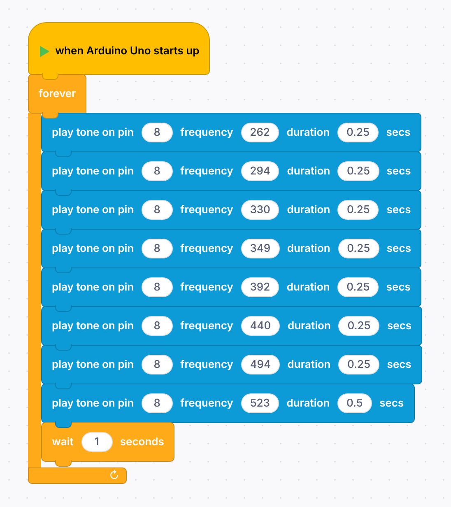

🎬فيديو الشرح
📖الشرح حسب العمر
🧒
مكبّر الصوت يحوّل الكهرباء إلى موسيقى وكلام، مثل سماعة الهاتف.
يحوّل الإشارات الكهربائية إلى موجات صوتية بأصوات أكثر تنوّعاً من البوزر. يتكوّن من مغناطيس دائم وملف صوتي (Voice Coil) وغشاء اهتزازي (Diaphragm) وإطار معدني. الأنواع: Mini Speaker وPiezo Speaker. المواصفات الشائعة: 8Ω و0.5–3W.
يحوّل الإشارات الكهربائية إلى موجات صوتية بأصوات أكثر تنوّعاً من البوزر. يتكوّن من مغناطيس دائم وملف صوتي (Voice Coil) وغشاء اهتزازي (Diaphragm) وإطار معدني. الأنواع: Mini Speaker وPiezo Speaker. المواصفات الشائعة: 8Ω و0.5–3W.
- مقاومة 8Ω — لا يُوصل مباشرة بالمنفذ (تيار عالٍ)
- يحتاج مضخّماً مثل PAM8403 أو LM386، أو وحدة DFPlayer
- القدرة 0.5–3W
🖼️الصورة التوضيحية
- 1الغشاءيدفع الهواء
- 2الملف والمغناطيسيحوّلان التيار إلى حركة
- 3الإطاريثبّت الأجزاء
- 4الأطرافتوصيل الإشارة
⚙️كيف تعمل؟
- تيار متغير يمر في الملف
- الملف يصبح مغناطيساً يتنافر مع المغناطيس الدائم
- الغشاء يتحرك ذهاباً وإياباً
- الهواء يهتز ← نسمع الصوت
💻البرمجة: Arduino IDE و mBlock 5
int notes[] = {262, 294, 330, 349, 392, 440, 494, 523}; void setup() {} void loop() { for (int i = 0; i < 8; i++) { tone(8, notes[i], 250); // عبر مقاومة 100Ω أو مضخّم delay(300); } delay(1000); }

في mBlock 5: الأجهزة ← أضف ← Arduino Uno، اختر وضع رفع (Upload)، ثم اتصال واختر منفذ COM، ركّب الكتل كما في الصورة واضغط رفع.
📌نصيحة وتحذير
⚠️
وصّل السماعة عبر مضخّم أو مقاومة 100Ω على الأقل لحماية المنفذ.
✅سؤال سريع
ما المقاومة الشائعة للسماعة الصغيرة؟